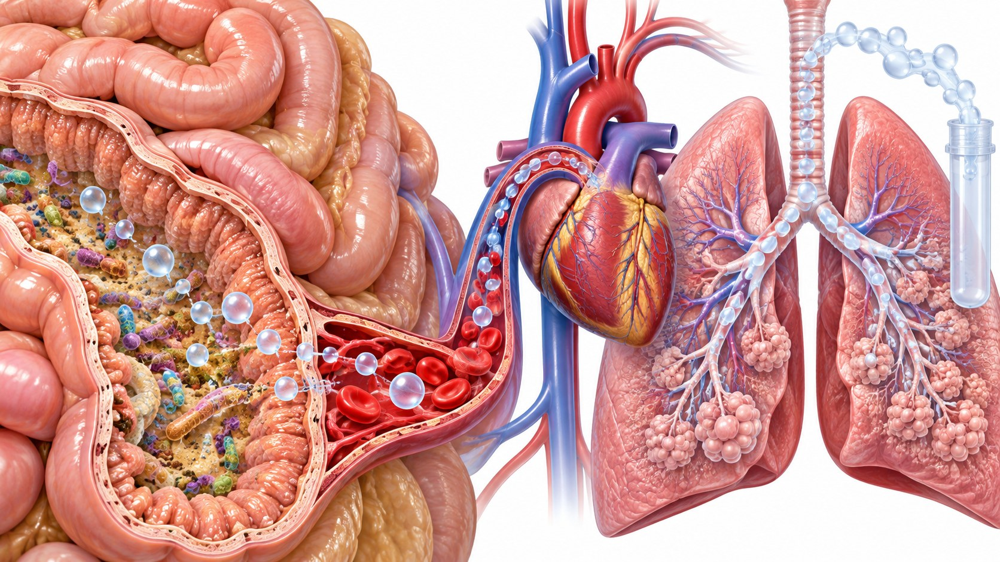

CLINICAL LEARNING · 아산 28회
IBS와 SIBO
호기검사와 rifaximin 근거의 해석
질환의 개념과 치료 반응을 구분한다

모든 검사를 일률적으로 시행하는 접근을 줄인다
빈도 · 배변 관련성 · 월경기간만의 증상을 구분한다
검사 소개의 위치와 검사 권고의 위치를 함께 읽는다

섭취 기질의 발효 → 호기 가스라는 측정 경로
교재의 lactulose 호기검사 연구 표
| 연구 | 기질 | 대상 수 | 양성률 |
|---|---|---|---|
| Pimentel 2000 | Lactulose | 202 | 76% |
| Pimentel 2003 | Lactulose | 111 | 57–84% |
| Nucera 2004 | Lactulose | 200 | 75% |
| Nucera 2005 | Lactulose | 98 | 65% |
낮은 전신 흡수와 미생물·대사산물 경로
특히 팽만이 동반된 IBS-D라는 맥락
비변비형 IBS의 치료 반응을 평가한 연구
교재에 제시된 rifaximin 연구 종합
강의 교재에서 비교한 세 학회의 권고
| 학회 | 권고 강도 | 근거 수준 |
|---|---|---|
| AGA | Conditional | Moderate |
| ACG | Strong | Moderate |
| KSNM | Weak | Moderate |
정기욱 연자 Q&A · 모음집 51쪽
정기욱 연자 Q&A · 모음집 51–52쪽
IBS 치료 전후에 기질적 질환을 놓치지 않는다
호기검사와 rifaximin 근거의 해석